SEGA: קמפיין יוצרים כדי שסוניק ירוץ שוב
להשקת «Sonic Generations Recharged», גרסה משוחזרת של משחקי סוניק הקלאסיים, בנינו קמפיין יוצרים: עשרה פרופילים בשלוש רמות, תוכנית פנייה ותמורה לכל אחד, הבריף שהם מקבלים, הנחיות התוכן, ציר הזמן, המדדים וקריאה של טרנדים, האשטאגים ומתחרים.

המשימה
SEGA משיקה את «Sonic Generations Recharged». מטרת הקמפיין: להצית את הנוסטלגיה של מי שגדלו עם סוניק ובו-זמנית לתפוס את מי שמגלים אותו בפעם הראשונה. הקהל בגילי 15 עד 35, חי בין יוטיוב, Twitch, אינסטגרם ו-TikTok, ומערבב משחקי וידאו עם תרבות פופ, אנימה וממים. המסר המרכזי: לסוניק אין גיל; בין אם זו הריצה הראשונה שלך או חזרה לעבר, המשחק הוא על מהירות, כיף וחיבור מחדש למה שהפך את המשחקים לקסומים.
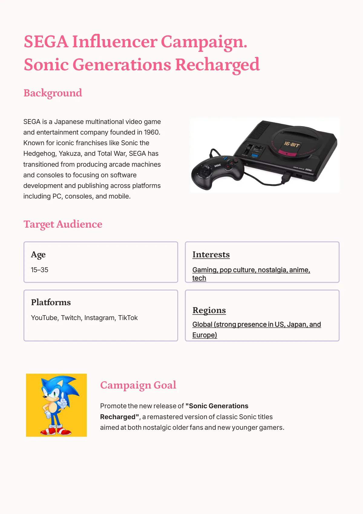
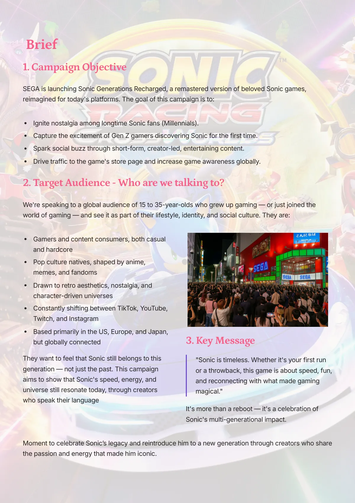
החליקו הצידה או השתמשו בחצים. הקישו על צילום מסך כדי להגדיל אותו.
עשרה יוצרים בשלוש רמות
הבחירה מערבבת גדלים בכוונה: יוצרי מגה (יותר ממיליון עוקבים) לחשיפה ולבאז של ההשקה, רמת ביניים (בין מאה אלף למיליון) לאמינות נישה ולתוכן מעמיק, ומיקרו (פחות ממאה אלף) לאותנטיות ולקהילה. הקטגוריות מכסות גיימינג, רטרו, אנימציה, קוספליי ובידור כללי, והחשבון הרשמי של סוניק משמש כקול המרכזי שמסדר את השיחה.
| יוצר | רמה | פלטפורמה | קטגוריה | מה הם מביאים |
|---|---|---|---|---|
| Jacksepticeye | מגה | YouTube | גיימינג וקומדיה | אנרגיה ו-Let's Plays בנראות גבוהה |
| Pokimane | מגה | Twitch | גיימינג ולייפסטייל | «ערב נוסטלגיה» בשידור חי לקהל צעיר |
| Valkyrae | מגה | YouTube ו-Twitch | מגוון | «פעם ראשונה משחק סוניק» לדור ה-Z |
| Miniminter | מגה | YouTube | גיימינג ובידור | אתגרים עם חברים, פורמטים ויראליים |
| Sonic the Hedgehog (רשמי) | מגה, של המותג | X ו-TikTok | דמות | «המנצח» של המעריצים: הומור, פאן ארט, השתלטויות |
| The Completionist | ביניים | YouTube | רטרו | ביקורת 100% למעריצים הוותיקים |
| Girlfriend Reviews | ביניים | YouTube | ביקורת עם הומור | מבט של «צופה מזדמן» שמגיע גם ללא-גיימרים |
| Arekkz Gaming | ביניים | YouTube | מדריכים | מדריכים ופירוק המשחקיות כדי להניע את החלטת הקנייה |
| Domics | ביניים | YouTube | אנימציה | סרטוני אנימציה קצרים של נוסטלגיה, קלים לשיתוף |
| ItsSunpi | מיקרו | Instagram ו-Twitch | קוספליי | טרנספורמציות של סוניק רטרו ומודרני ברילס |
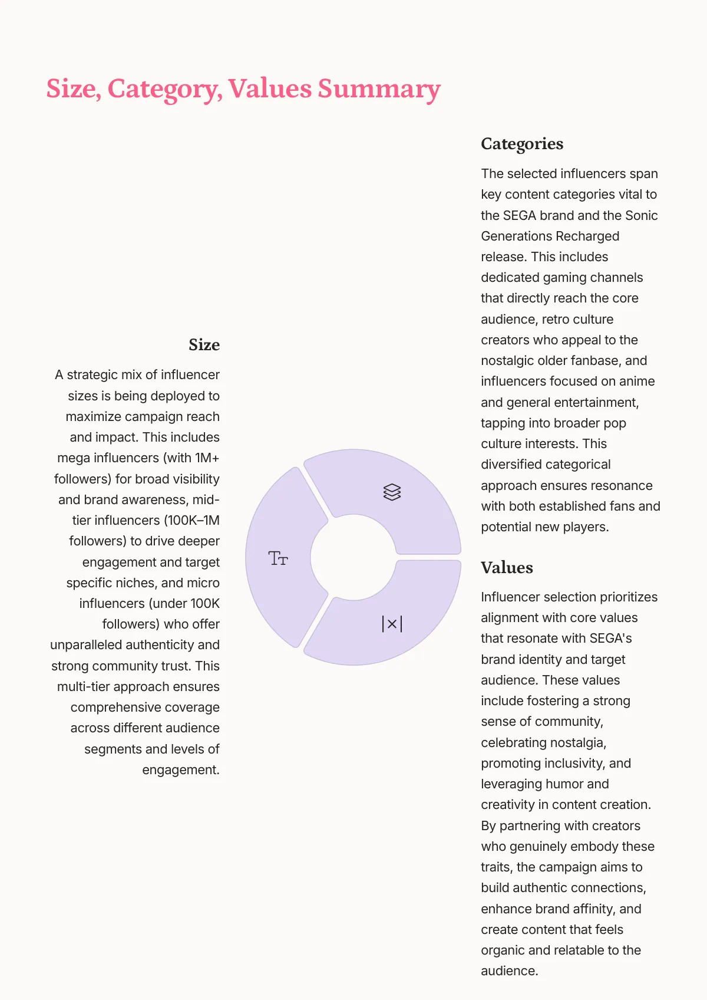
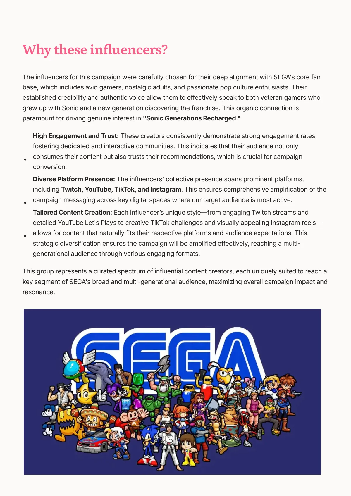
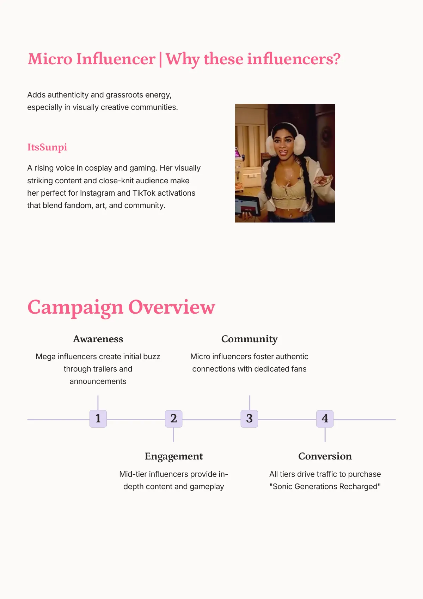
החליקו הצידה או השתמשו בחצים. הקישו על צילום מסך כדי להגדיל אותו.
תוכנית לכל יוצר
לכל יוצר יש שלוש שורות: איך פונים אליו, מה הוא מקבל בתמורה ואיזה קשר ארוך טווח מחפשים. ל-Jacksepticeye מגיעים דרך הסוכנות שלו וצוות העיתונות של SEGA, עם גישה מוקדמת ושידור ממומן; בתמורה, תוכן בלעדי, מרצ'נדייז ועמלה על קישורי שותפים; בטווח הארוך, משתף פעולה קבוע ואפילו מקום בקרדיטים של משחק. ל-Pokimane מציעים «Nostalgia Night» בשידור חי עם פיצ'רים אינטראקטיביים ואווטאר של סוניק לאוברליי שלה; בטווח הארוך, סדרת «Play With Poki» עם השקות של SEGA. את ItsSunpi מזמינים בהודעה ישירה לעשות קוספליי של סוניק רטרו ומודרני, עם ערכת קוספליי ומקום באינסטגרם הגלובלי של SEGA; בטווח הארוך, שגרירת הקוספליי של המותג.
מה היוצרים מקבלים: בריף, הנחיות וציר זמן
הבריף מדבר בשפה שלהם: טון שובב, נועז, אנרגטי, אותנטי ו«קצת חנוני»; התוכן צריך להרגיש כמו פוסט רגיל שלהם עם סוניק שחולף במהירות. פורמט מומלץ: רילס או TikTok של 30 עד 60 שניות, עם אפשרות לקטע ביוטיוב או ב-Twitch ועד שלושה סטוריז. כן: השם המלא של המשחק, תיוג החשבון של סוניק וההאשטאג #RechargedWithSonic, תאורה בהירה והתייחסויות למעריצים. לא: מתחרים, נגיעה בלוגו או בצבעים, עדויות מזויפות, עריכת יתר. ציר הזמן כולל חמש תחנות, מהבריף ועד יום פרסום מתואם, והתשלום נקבע לפי רמה עם תוספות: מרצ'נדייז בלעדי, קישורי שותפים, גישה מוקדמת, בונוסים על ביצועים והזדמנויות לטווח ארוך.
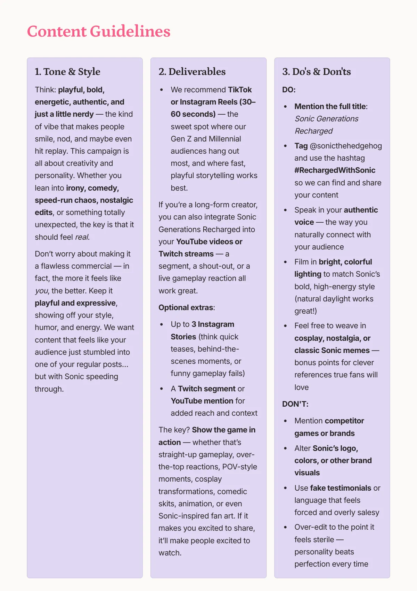
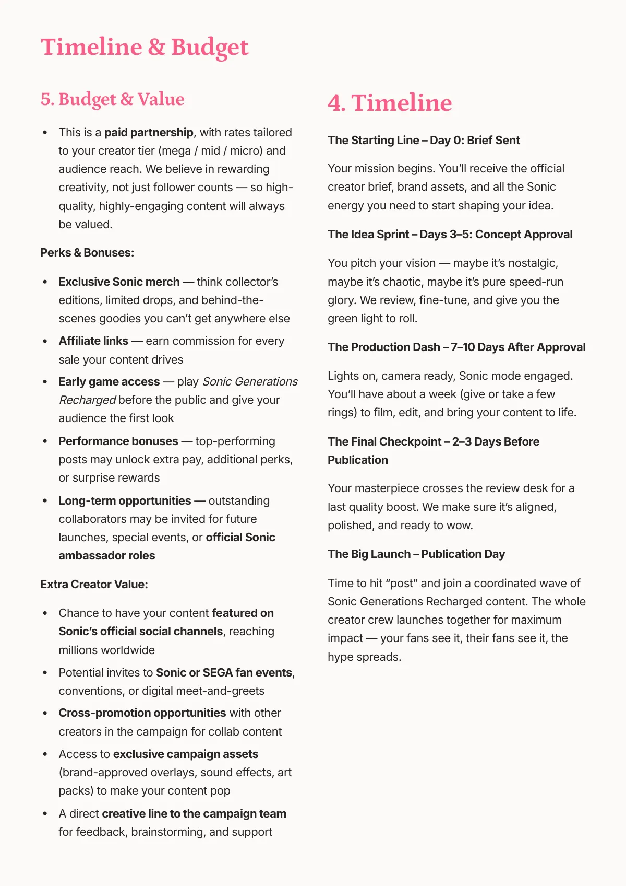
החליקו הצידה או השתמשו בחצים. הקישו על צילום מסך כדי להגדיל אותו.
איך מודדים
שלושה מדדים בעדיפות: שיעור מעורבות (החשוב ביותר: לייקים, שיתופים, שמירות ותגובות שמראות התרגשות, נוסטלגיה או סקרנות), שימוש בתיוג ובהאשטאג (כדי לעקוב ולשתף מחדש את התוכן מהערוצים הרשמיים) וחשיפה ביחס לביצועים הרגילים של כל יוצר. פנימית עוקבים גם אחרי אינטראקציות בסטוריז, דואטים וסטיצ'ים, תנועה לעמודי SEGA דרך קישורים ייחודיים, והטון של התגובות.
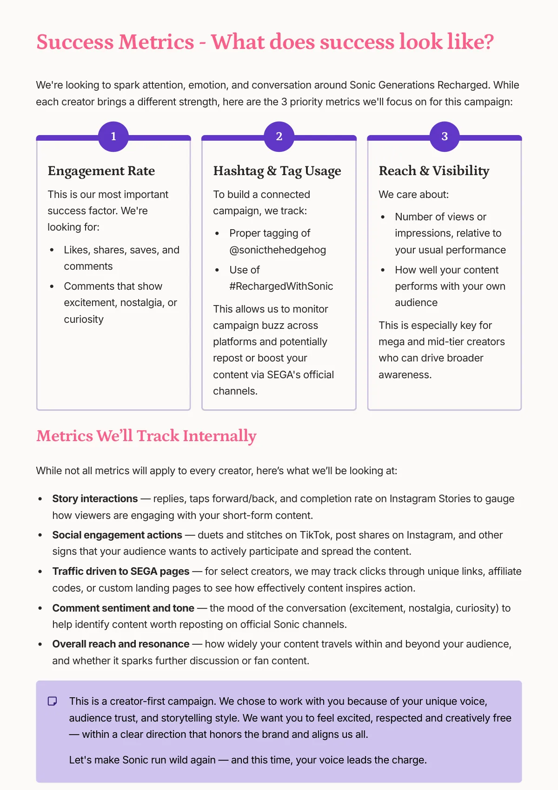
טרנדים, האשטאגים, מתחרים ומצב רוח
ארבעה טרנדים בנישה: שיווק נוסטלגיה (הוצאות מחודשות ורימאסטרים), וידאו קצר כפורמט הדומיננטי, השקות בהובלת יוצרים שמנצחות פרסומות מסורתיות, וקוספליי ופאן ארט כמנועים של באז אורגני. המתחרים במרחב של הקמעות וההוצאות המחודשות הם Nintendo, Capcom ו-PlayStation; Nintendo שולטת בשיחה הגלובלית, ולכן SEGA חייבת לנצח באנרגיה של נישה: ערך הממים של סוניק הוא היתרון שלה. מצב הרוח חיובי («זה מחזיר לי את הילדות»), עם סיכון קטן: הפחד מבאגים או ממשחקיות חלשה, כמו ברימאסטרים קודמים.
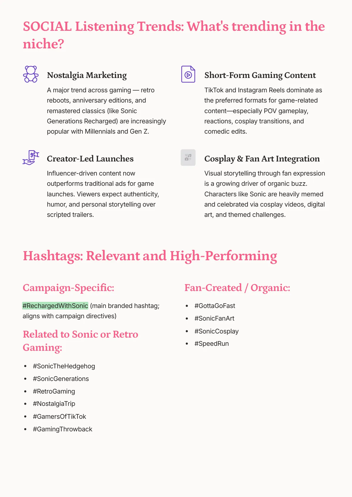
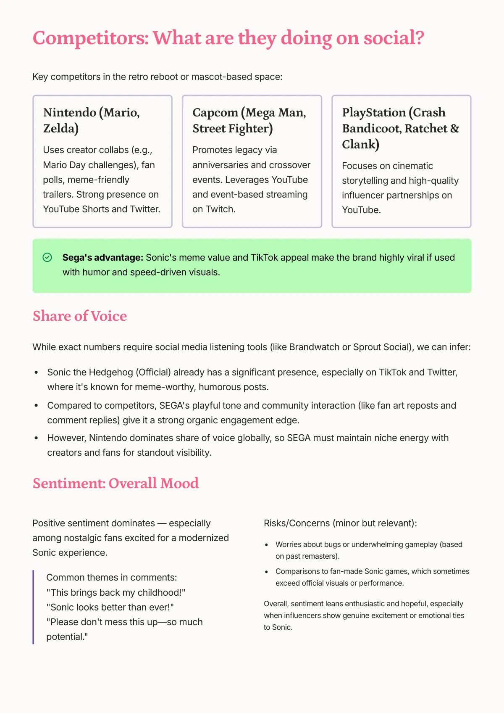
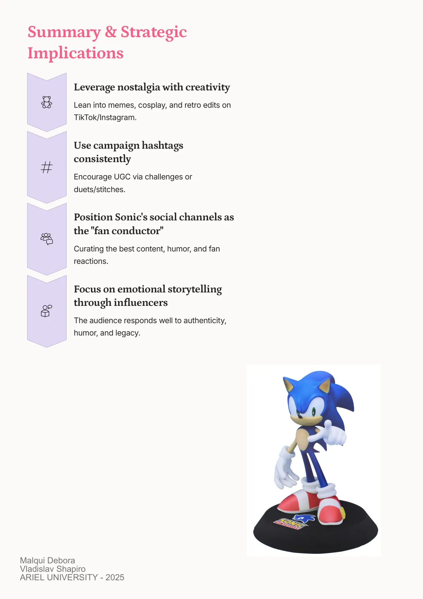
החליקו הצידה או השתמשו בחצים. הקישו על צילום מסך כדי להגדיל אותו.
מה לקחתי איתי
שקמפיין יוצרים לא בונים מרשימת שמות אלא משלוש רמות שעושות דברים שונים, ושהבריף הוא המוצר: אם הוא לא מדבר בשפה של היוצר, אין תוכן שמרגיש אמיתי.